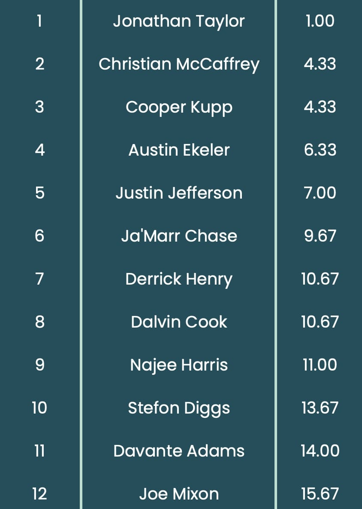

< I ranked NFL players with a custom algorithm for your fantasy draft so you don't have to! >
These days, there are so many different rankings of NFL players based on all types of different data. Each company claims that their rankings are the best, yet they are all different. How can that be the case? In my rankings, each player recieves a cumulative score, based on a plethora of different statistics.
The algorithm combines information about carries, targets, total yards, and more. Additionally, part of the score is compiled by combining average draft position (ADP) from multiple different platforms. The lower the number, the better the player. The first round in a 12 person league based on my statistic is displayed above!